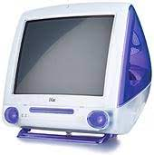
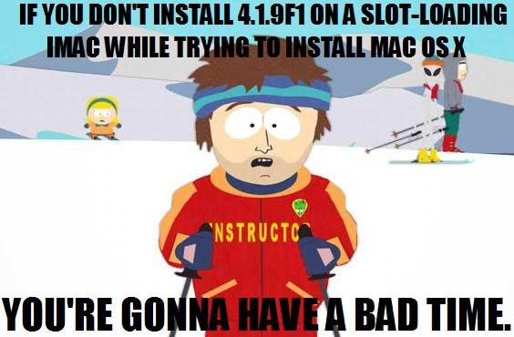

iMac G3 Slot-Loader Owner's Guide
Originally written February 15, 2022. Revised August 23, 2022.

Pictured: A slot-loading G3 in grape. Courtesy of Apple Computer.
Overview of the hardware
The slot-loading iMacs of the turn of the millenium were iconic and looked like fever dreams in some aspects. Steve Jobs helped design this computer, saying that it had to have no fan and a slot loading disc drive. Little did he know, that led to some of this computer's most striking problems that were not present with the tray loading iMacs. These computers came with PowerPC G3 processors ranging from 350MHz to 700MHz, used PC100 SDRAM of up to 1GB, and ran an Ultra ATA-66 hard disk of up to 128GB capacity. They used an internal 15" (13.8" viewable) CRT which ran at 640x480 at 119Hz, 800x600 at 85Hz, and 1024x768 at 72Hz. LG allegedly aided the manufacturing of these computers, which probably explains why they're so shoddy.
The 1999 models used PowerPC 750 chips running at 350-400MHz. These models used the Kihei/P7 motherboard, and came in Strawberry, Tangerine, Blueberry, Grape, Graphite, and Lime. These models came with Mac OS 8.6, and could run up to 10.3.9 (or 10.4.11 for 400MHz models). They use an ATI Rage 128 VR graphics chip, which does not have upgradeable VRAM unlike the tray-loading models. The 350MHz model was only sold in Blueberry, and had no FireWire 400 or VGA duplication. This model, along with the Summer 2000 iMac, uses 512KB of backside L2 cache with a 2:5 clock ratio. These models have the identifier PowerMac2,1.
The 2000 models came in Indigo, Ruby, Sage, Graphite, and Snow; a more professional choice of colors, especially for businesses. They used the same PowerPC 750 chip, and was clocked at 350-500MHz, depending on what version you got. These models got the higher-clocked ATI Rage 128 Pro with 8MB of VRAM. The 350MHz Indigo model also omitted a VGA port and FireWire 400. They came with Mac OS 9.0.4 and could run up to 10.4.11 (the 350MHz model will run up to 10.3.9). These models have the identifier PowerMac2,2.
Finally, we have the Early 2001 and Summer 2001 models. The early 2001 models came in Indigo, Graphite, and 2 new patterns: Flower Power and Blue Dalmatian. Obviously, the latter 2 "colors" sold poorly, and are extremely hard to find. The Summer 2001 iMac brought back the snow color and left Blue Dalmatian and Flower Power on ice. The rarer early 2001 iMacs came with a PowerPC 750CX processor, while the 500, 600, and 700MHz models of later times came with a PowerPC 750CXe processor. The 400MHz Early 2001 model still used the PowerPC 750 processor. The advantage of the 750CX and CXe processors was a 1:1 clock ratio L2 cache. It was 256KB, or half the size of the 750's 2:5 512KB cache. Despite this, processor performance was improved dramatically as the CPU did not have to go to a separate L2 chip, and could just immediately get something through the cache. These computers were also given the ATI Rage 128 Ultra card with 16MB of VRAM, and they all ran up to 10.4.11 Tiger from Mac OS 9.1 or 10.0.4. All 2001 models have the identifier PowerMac4,1.
These computers sold very well, and made a cultural impact on 1990's technology. Unfortunately, many of them ended up being recycled due to faulty components or obsolescence. Apple just made these machines like they were disposable, and once you take one of these apart, it really shows.
Flaws of the system
Let's get the big one out of the way first, build quality. Apple was trying to get these to as many places as they could with a reasonable price, so they really cut down on production costs with this model. Want to do maintenance past the motherboard? Expect to run into your INNER FRAME falling apart. These computers also had no fan, so they ran hot as hell, which in turn weakened the plastics and even the components over time. Once you needed to service your iMac, you had a very low chance of getting it back together due to how brittle the plastic inner frame got. Not to mention, the CPU is cooled on the same plate where the CRT board sits, which is a recipe for disaster. Lots of people reported their CRTs going out, along with their inner frames showing cracks. Many higher-clocked models are susceptible to this, so mainly you see low-end iMacs still kicking around. It's very hard to find one of these in top shape.
The CRT boards would always undergo a slow and painful death. I have a grape iMac G3 with a 700MHz clocked board swapped in, and I initially thought my graphics chip was going out. Boy, was I wrong... the CRT boards go out after long periods of usage, especially if your iMac has a faster CPU. No matter how good in condition your slot loader is, your CRT is a ticking timebomb of failure. Steve Jobs may have been a great businessman, but his fear of fans in machines with already loud hard disks really made for some terrible consequences. Oh, did I mention these machines were part of the Harman Kardon dryrotting issue? Replace your speakers ASAP, more on that later.
Last, but not least, the slot loading optical drive. These came with CD-ROM, DVD-ROM, and CD-RW drives depending on what you got. I'm not sure if that really matters anymore considering that 9 out of 10 of these drives don't work. It's not always the laser assembly, but it is most surely the mechanical setup. There is an overly stressed rubber belt with some rubber roller covers which... barely work after a good amount of time. You think you could swap one of these with an old iBook or MacBook DVD drive, but unfortunately you're shit out of luck. These used proprietary drives which flipped the IDE connector 180 degrees. I'm honestly surprised no one has done these systems justice and made a 3d-printable model of a drive caddy with a custom interceptor PCB for the 50-pin cable that goes to the motherboard... Not to mention, if you own a G4 cube, you are in the same boat.
Firmware update

Pictured: Meme playing on the importance of iMac Firmware Update 4.1.9f1. Illustration from South Park, text superimposed by k24a1. 2/15/2022
Without this firmware update, if you try installing Mac OS X, your display will black out. Not to mention this firmware update brings improvements to how the iMac handles its hardware.
Maintenance level
These machines can be very high-maintenance. If you want to own a slot loader iMac, you would definitely have to do some hardware maintenance on it. On 1999 models, replace the thermal paste on both sides of the shim and the CPU die. On later models with a 750CX or CXe chip, there is a thermal pad. You could replace it with a copper shim and some thermal paste.
Storage, RAM, and Wi-Fi
These take 3.5 inch IDE hard disks. Get a Western Digital 7200rpm disk of any size up to 120GB. Honestly, having an SSD in one of these isn't worth the trouble, and IDE disks are very common and tend to last a while if you get the right one. If you do want to install an SSD, use an mSATA drive of up to 128GB with a 44-pin IDE converter and a StarTech 44 to 40 pin IDE adapter.
These take up to 1GB of PC100 SDRAM using 2 512MB PC100 SDRAM DIMMs. These can take PC133, but the system bus will always run at 100MHz.
These do take 802.11b AirPort cards, but they're pretty much useless now. Besides, there is not much you can do online with one of these unless you're Action Retro.
The optical drive is a pain in the ass. Just use a FireWire drive.
Operating system
If I'm honest, you're stuck with Mac OS on this platform. Yes, you can install OpenBSD and maybe a linux distro or 2, but there's not much you can do with such hardware if you want to bring it to the 2020s. I would recommend Mac OS 9.2.2 and Mac OS X 10.3.9. They're great platforms for a good range of games and applications. There are many games that are on the classic Mac OS that are worth playing, and this is a good computer to do just that. You can also run some older creative software on here like Adobe Photoshop and kiss Creative Cloud goodbye if you ever so desired to.
If you're mad enough, you can fire up SoftWindows or Connectix Virtual PC on one of these and run Windows 98. Oh, and if you wanted to turn your fisher-price computer into a PlayStation, you can simply play games with Connectix Virtual Game Station, provided that Sony won't hunt you down or if you could even find a copy.
Conclusion
The slot-loading iMacs, while very iconic, had a lot of problems that ended up in the disposal of many of these units. It's very difficult to find one that is in decent shape now, and most of the ones you see have been through some serious abuse. These go on eBay for a few hundred USD, which I personally wouldn't even pay a cent for. They're bound to fail and are probably just best used as display pieces. After all, they are works of art... to some people, at least. They make alright Mac OS 9 systems, but at that rate, just get a Power Mac G4 and an old office CRT monitor. Crank the resolution to 640x480 and you've got yourself a damn good system. Better yet, if you find an eMac and manage to fix it, those have stellar CRTs considering the market they were aimed towards.
If you are offered one for free, you could definitely take it. They're becoming harder to find and are a must-have for computer hardware collectors. However, if you are looking to get into PowerPC macs and you want to buy one, this is not exactly a good system to start off with. My personal favorite is the Apple eMac, and you could run Mac OS X Tiger with great performance or even OS 9 patched for a couple of later models, excluding the 2005 eMac. In short, get a slot loader if it's something you want to have in a collection or if it's offered to you, but there are much better options aside from being a novelty computer.